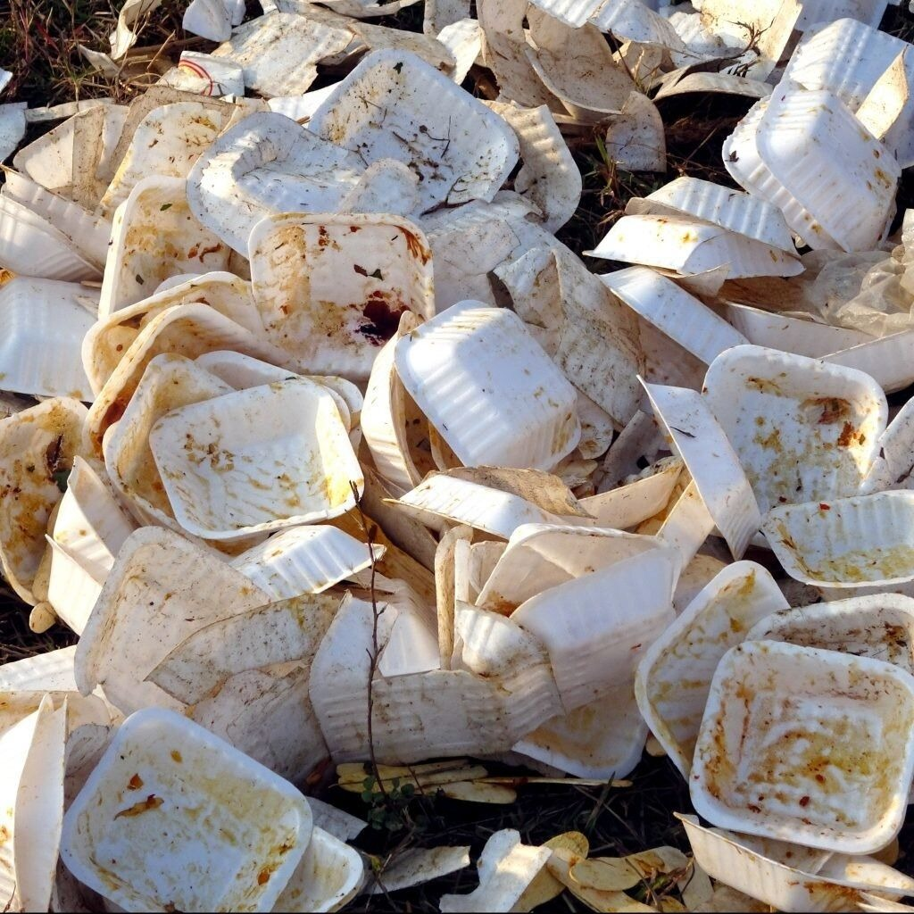

Kenali dan Pilah Sampahmu
Memilah sampah dari sumbernya adalah aksi nyata untuk menciptakan lingkungan yang bersih dan sehat. Pelajari empat kategori utama sampah rumah tangga untuk memudahkan proses daur ulang.
Sampah Organik
Deskripsi: Material alami yang mudah membusuk.
Contoh: Sisa makanan, dedaunan, dan tulang (bisa dijadikan kompos).
Waktu Terurai: Sangat cepat (2-6 minggu untuk sisa makanan, hingga beberapa bulan untuk ranting/tulang).
Sampah Anorganik
Deskripsi: Material buatan manusia yang bernilai ekonomis untuk didaur ulang.
Contoh: Botol plastik, kertas, dan kaleng (harus bersih dan kering).
Waktu Terurai: Sangat lama (Plastik 100-500 tahun, kaleng aluminium 50-200 tahun, dan kaca jutaan tahun).
Sampah B3 (Bahan Berbahaya dan Beracun)
Deskripsi: Limbah yang mengandung zat kimia berbahaya dan beracun.
Contoh: Baterai bekas, lampu neon, kaleng aerosol, dan obat kedaluwarsa.
Waktu Terurai: Tidak bisa terurai alami. Racunnya akan menetap dan mencemari lingkungan hingga ratusan tahun.
Sampah Residu
Deskripsi: Sampah sisa kotor yang belum memiliki teknologi pengolahan massal.
Contoh: Popok, pembalut, puntung rokok, dan kemasan saset.
Waktu Terurai: Sangat lama (200-500 tahun) dan biasanya hanya terpecah menjadi mikroplastik yang mencemari lingkungan.


